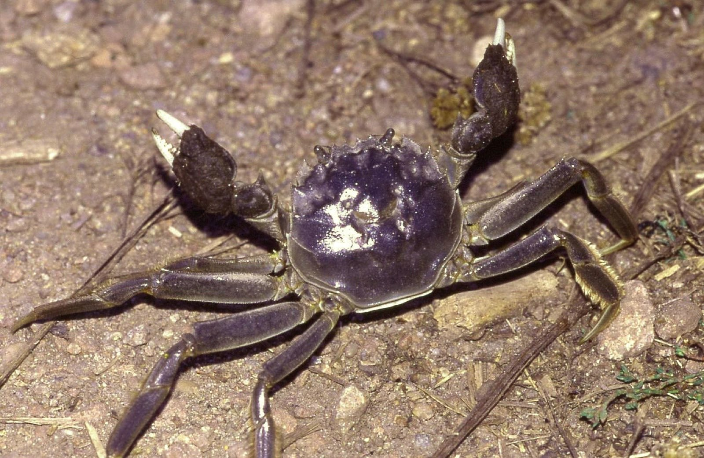
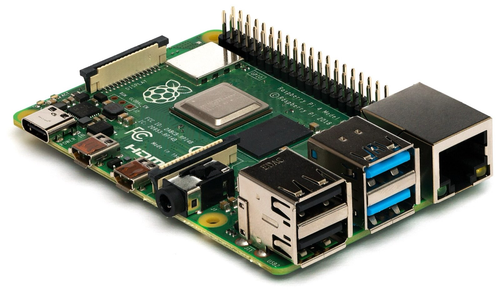

Your own AI agent that asks first.
linear → update_issue
{
"id": "MOK-48",
"state": "Done"
}A self-hosted assistant that lives in your Discord, in text and in voice. One Rust binary on a Raspberry Pi.
Install on your PiNothing matches. Try "voice" or "remind".
One request
First it lands in a thread.
Then it works in its own folder.
github → create_issue
{ "title": "Returns doubled in October" }It asks before changing anything outside its folder.
github → create_issue
{ "title": "Returns doubled in October" }Then it tells you what it did.
It watches for you
Asked
Every 30 minutes the job runs in a fresh conversation. While CI is still running it replies NO_REPLY, and nothing is posted.
Quiet
Done

Named after a crab
Mokuzugani is the Japanese name for the mitten crab, whose hairy claws look like they hold a tuft of seaweed scraps.
Like the crab, it keeps its claws close: it reads freely, writes only in its own workspace, and by default asks you before changing anything else. It never gets a shell on your machine.
Runs on a Raspberry Pi
One binary, one SQLite file and a background service. It sits on a shelf and answers in Discord.
- Linux on arm64 and x86_64Prebuilt, glibc 2.35 or newer
- macOS and everything elseBuild from source with cargo install
- Claude, Copilot, ChatGPT or OpenCode GoAn API key, or your subscription through OAuth

Questions
Yes. The arm64 release runs on a Raspberry Pi 4 or 5 with a 64-bit OS.
Claude with an Anthropic API key, the models on OpenCode Go, or your GitHub Copilot or OpenAI ChatGPT subscription. Voice needs an OpenAI key.
Its own tools change nothing outside its workspace, hidden files like ~/.ssh are refused, and code runs without network. MCP calls and settings changes wait for your approval, unless you let a server run without asking or turn on auto mode, where a reviewer model passes the low-risk ones.
No. It runs only as a Discord bot: DMs, server channels, threads and voice channels.
Yes, open source under MIT or Apache-2.0. You pay your model provider for what it uses.
Yes. The arm64 release runs on a Raspberry Pi 4 or 5 with a 64-bit OS.
Claude with an Anthropic API key, the models on OpenCode Go, or your GitHub Copilot or OpenAI ChatGPT subscription. Voice needs an OpenAI key.
Its own tools change nothing outside its workspace, hidden files like ~/.ssh are refused, and code runs without network. MCP calls and settings changes wait for your approval, unless you let a server run without asking or turn on auto mode, where a reviewer model passes the low-risk ones.
No. It runs only as a Discord bot: DMs, server channels, threads and voice channels.
Yes, open source under MIT or Apache-2.0. You pay your model provider for what it uses.
Put it on your Pi tonight
Download it, give it a Discord token and a model, then run it in the background.
curl -fsSL https://raw.githubusercontent.com/xianyuntang/mokuzu/main/install.sh | sh
mokuzu configure
mokuzu install